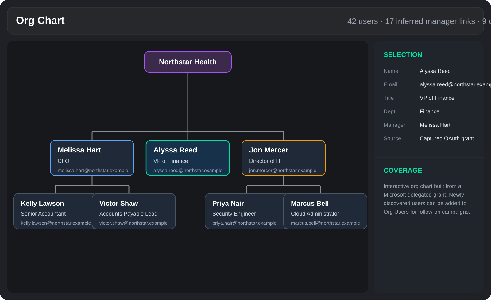

AI campaign suggestion in the PhishU Framework is not meant to be a slot machine that spits out ten generic phishing ideas. It is supposed to help the operator make a better first move in a black-box assessment. That means the suggestion engine has to care about what the target organization is likely using, what the Framework already knows about that organization, and whether the right next step is a recon-first Microsoft technique instead of a generic lure.

AI Suggestions Should Not Be Infrastructure-Blind
A company that appears to run Microsoft 365, Entra ID, and Exchange Online should not get the same first campaign suggestions as a company that looks like a Google Workspace shop or a company that shows no clear cloud signal at all. The PhishU Framework now leans into that idea by combining AI with a practical whitelist and blacklist style decision layer.
In plain terms, the Framework looks for evidence that should increase or decrease confidence in certain campaign types. DNS and MX records matter. Local M365 verification data matters. Entra management settings matter. The research pass matters. If those signals all start pointing in the same direction, the Framework can treat Microsoft-focused phishing techniques as more relevant than generic lures.
Why the Whitelist and Blacklist Approach Matters
The point is not to pretend the system has perfect certainty about every target environment. The point is to stop making recommendations as if every organization is identical. A practical campaign suggestion engine should have a mental model that sounds more like this:
- If the target strongly appears to use Microsoft 365 and Entra, move Microsoft-native techniques up the list.
- If the target does not show strong Microsoft evidence, do not force those techniques to the top.
- If the operator has very little user coverage yet, favor campaign ideas that can help build that coverage first.
- If the organization already has enough users and context in the Framework, favor more targeted role-specific scenarios instead of recon-first collection.
That is the whitelist and blacklist idea here. Some signals make a technique more appropriate. Other conditions should suppress or demote it. The result is a suggestion list that feels more like planning and less like random brainstorming. The important distinction is that the output is not just "what email might people click." It is "what first campaign is most likely to reveal useful structure about this organization."
First Campaign Changes the Recommendation
The first enabled campaign for an organization is not the same decision as the fifth. On a brand new org, the Framework may know the target domain and some infrastructure signals, but still know very little about the employee population. That is exactly where a recon-first campaign can make more sense than immediately launching a broad social-engineering lure.
If the target appears to be a Microsoft-heavy environment and there is not already another active campaign for the org, the AI suggestion engine can now bias toward an initial Microsoft-focused recon campaign. That could mean Device Code phishing, a Microsoft OAuth consent flow with limited scopes, or an admin-approval-oriented Microsoft access scenario depending on the context. The point is not just to get a click. The point is to establish whether Microsoft token-based techniques fit the tenant and what kind of directory access that tenant is likely to expose.
Low Org Users Coverage Should Change the Plan Too
The same logic applies when the Org Users table is still sparse. If there are not many users available yet, the value of a highly targeted payroll or executive lure is limited. The operator does not have enough visibility into departments, reporting chains, or the structure of the organization to make the most of those targeted scenarios. In a black-box engagement, that lack of coverage is a signal by itself.
In that situation, the Framework can favor Microsoft recon-first campaign suggestions because the better next move may be to learn more about the organization before trying to phish it in a more tailored way. That is especially true when the infrastructure signals strongly suggest Microsoft 365 and Entra, because those techniques can be used to test delegated access, enumerate directory data, and validate whether broader org discovery is available.
Examples of Recon-First Suggestions
When the AI suggestion engine sees that combination of conditions, it can move ideas like these closer to the top:
- Device Code Phishing when the goal is a low-friction Microsoft sign-in flow with a higher chance of success and a strong fit for Microsoft-native environments.
- Limited OAuth Consent Grant when the operator wants to test what delegated directory access the tenant will expose without starting with the loudest possible scope set.
- Admin Consent or Approval-Oriented Flows when the environment looks like Microsoft 365 but the likely value is in testing how the tenant handles higher-friction consent paths rather than a normal user grant.
The important part is the rationale. The Framework should not just say "try Device Code phishing." It should explain why: this looks like a Microsoft environment, there is limited user coverage in the Framework, and a recon-first technique may be the smartest starting point before more targeted follow-on campaigns.

What Happens After a Microsoft Grant Is Captured
This is where the Org Chart feature becomes strategically important. Once a Microsoft OAuth or Device Code capture succeeds, the Framework user is not limited to a token row in a table. The captured-grant workflow now includes an Org Chart view that can explore the best-effort directory and reporting-chain data exposed by that grant.
If the granted scopes and tenant policy allow it, the Framework can pull from the victim profile, manager relationship, direct reports, org directory, and best-effort manager lookups. That information is turned into an interactive Org Chart directly inside the captured OAuth workflow. Operators can inspect the structure visually instead of trying to reason through raw API responses or disconnected user records.
Why Org Chart Matters in a Black-Box Assessment
In a black-box assessment, getting a useful user list is often half the battle. The Org Chart feature is not just there to look interesting. It is there to help operators turn a recon-first campaign into a stronger second campaign. If the captured grant exposes additional users who are not already in the Framework, those discovered users can be added into the Org Users table for that organization.
That changes everything about the next campaign. Instead of operating with a thin or incomplete user list, the operator can now build more tailored follow-on campaigns against identified departments, reporting chains, individual business units, or users sitting around a known manager or executive. In other words, the first campaign helps teach the Framework who the organization really is, and the second campaign can be far more specific because of it.
Adding Discovered Users Back into Org Users
The practical value is not only in the visualization. From the captured-grant Org Chart flow, newly discovered users can be added directly into the Framework's Org Users table. That means the operator can move from black-box uncertainty into a more structured recon posture without leaving the platform or manually retyping directory results.
Once those users are in Org Users, the rest of the Framework becomes more valuable. AI target suggestion gets better because there is now more real workforce structure to work with. Campaign targeting becomes more specific because departments, titles, and manager relationships are clearer. Follow-on phishing can be built around actual teams instead of assumptions.
The Better AI Story
The better AI story in phishing is not "the model wrote an email." It is that the platform can combine AI with deterministic product logic and real organization context to suggest a smarter assessment path. That means taking infrastructure clues seriously, recognizing when a recon-first campaign is more valuable than a broad lure, and then using the results of that recon to build the next campaign with much better context.
That is the direction the PhishU Framework is moving toward. AI helps identify the right first move. Microsoft-specific recon campaigns can help validate tenant fit and expand user coverage. The Org Chart turns captured Microsoft access into something operators can actually use. And the users learned through that process can be brought back into the Framework for the more targeted campaigns that come next.
Want to see how the Framework can turn a black-box Microsoft assessment into a structured user map?
The PhishU Framework combines AI with target-infrastructure signals, Microsoft 365 detection, recon-first campaign suggestion, and post-capture Org Chart exploration so operators can move from limited context to real users, real hierarchy, and much more targeted follow-on campaigns.
Contact Us